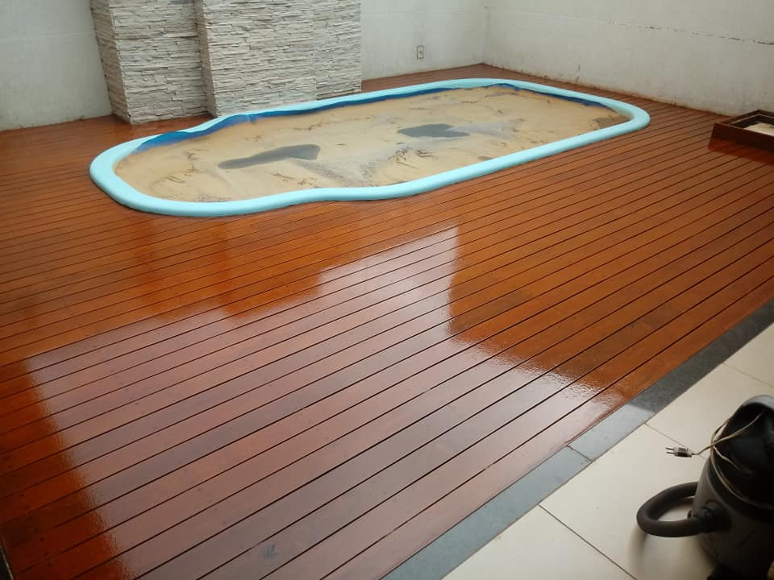

Sobre nós
Somos uma empresa que atende Uberaba - Minas Gerais e região, com mais de 25 anos de experiência na área de
reforma e restauração de pisos de madeira, tacos e assoalhos, com preço justo e um serviço sério.
Colecionamos recomendações de clientes satisfeitos.
O preço do serviço é passado através de um orçamento feito gratuitamente por um profissional experiente, o preço é calculado de acordo com o tamanho da área, qualidade do piso e outros fatores.
 Não arranque seus tacos sem antes consultar um especialista, a madeira se renova após ser lixada!
A madeira é um material muito duradouro e reformável, com a lixagem e a aplicação de sinteco, a sua
madeira voltará a ter a cor
e resistência que tinha quando foi instalada.
Seu piso estará como novo!
Com o melhor maquinário disponível e tacos disponíveis para a reforma, faremos sua reforma da
maneira mais rápida, eficaz e
profissional possível.
Já prestamos serviços para centenas de residências e comércios em Uberaba e Região e esperamos atender a você
também!
Solicite já um orçamento gratuito agora na página de contato!